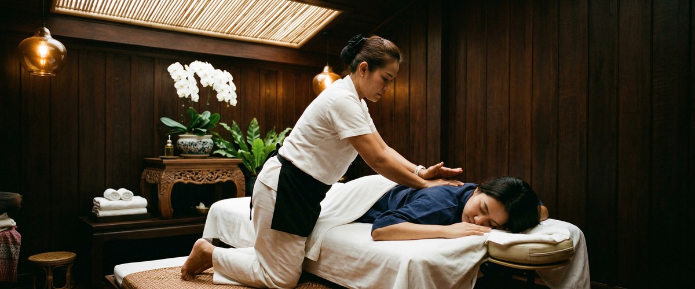
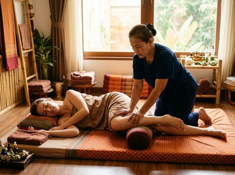

If you have ever felt a sharp, shooting pain that starts deep in your lower back or buttock and travels all the way down your leg, you already know how disruptive sciatica can be.

It can make sitting at a desk agonising, turn a short walk into an ordeal, and rob you of the restful sleep your body needs to recover. Thai massage therapy offers a focused, drug-free way to ease sciatic pain and get you moving freely again.
Sciatica is caused by irritation or compression of the sciatic nerve. It is the longest and widest nerve in the body, running from the lower spine through the buttock and down each leg. The pain usually affects one side.

Most people describe it as shooting, burning, or like an electric shock. Numbness, tingling, and weakness in the leg and foot are also common.
According to NHS guidance on sciatica, the most common cause is a slipped disc pressing on a nerve root in the lower spine. Other causes include spinal stenosis, where the spinal canal narrows, and piriformis syndrome, where a muscle in the buttock presses on the nerve directly.
Pain can come on suddenly after lifting or a sharp movement. It can also build gradually over time.
Massage works on sciatica in several ways. Tight muscles in the lower back, buttocks, and piriformis can press directly on the sciatic nerve. Releasing that tension reduces the pressure and the pain signals travelling down your leg.
A study in the Journal of Bodywork and Movement Therapies found that massage cut lower back pain and improved movement in people with sciatica symptoms.
Traditional Thai Massage suits sciatica well. It combines targeted pressure along the sen energy lines of the lower back and legs with assisted stretches that gently ease pressure on the lumbar spine and hip joints.
Thai Sports Massage goes deeper. It focuses on the piriformis, gluteals, and hamstrings — the muscles most likely to be holding tension against the nerve.
Thai Oil Massage adds flowing strokes that boost blood flow to the affected area. This helps clear waste products from inflamed tissue and brings in fresh, nutrient-rich blood.
Regular sessions build on each other. Over time, they reduce the deep tension that keeps the nerve aggravated between flare-ups.
At Thai Massage Greenock on South Street in Greenock, every session starts with a conversation. Jariya will ask where the pain is, whether it travels into your calf or foot, and what makes it worse. That shapes the whole treatment.
Jariya trained at Bangkok's Wat Po temple. She understands how the body's energy lines and muscle groups connect, and uses that knowledge to work on the root cause — not just the site of pain.
Depending on what your body needs, Jariya may focus on the lower back and gluteal muscles in a Traditional Thai Massage session. She may also combine deeper pressure with oil work on the hamstrings and calf.
You can book your session online and note where your sciatica is presenting so Jariya can prepare accordingly.
Sciatica responds well to massage across a wide range of people. Those who tend to see the most relief include office workers who sit for long stretches, drivers who spend hours behind the wheel, and manual workers who lift regularly.
Runners and cyclists with tight hamstrings and hip flexors also benefit, as that tightness puts strain on the lower back. Older adults with age-related disc changes and pregnant women dealing with lumbar pressure also frequently find relief through gentle, targeted massage.
Book a session at Thai Massage Greenock and take the first step toward lasting relief.
Yes. Massage works on sciatica by releasing tight muscles in the lower back, buttocks, and piriformis. Those muscles press on the sciatic nerve, and easing them reduces that pressure.
Research in the Journal of Bodywork and Movement Therapies found massage cut pain intensity and improved movement in sciatica patients. It does not fix the underlying disc or structural cause. But it meaningfully reduces pain and improves mobility during and between episodes.
Gentle massage is generally safe during a flare-up, as long as the therapist knows what they are working with. Deep pressure directly over an inflamed nerve root should be avoided in the acute phase.
At Thai Massage Greenock, Jariya adjusts pressure and technique based on your current pain level. Always describe your symptoms clearly at the start of your session.
Many clients notice less pain and better movement after their first or second session. For longer-standing or recurring sciatica, four to six sessions over four to six weeks tends to produce more lasting results.
Jariya keeps detailed notes after every treatment and builds on previous sessions. The work deepens over time rather than starting from scratch each visit.
Traditional Thai Massage, Thai Sports Massage, and Thai Oil Massage can all help with sciatica. It depends on your specific situation.
Traditional Thai Massage works well for sen line tension and restricted hip mobility. Thai Sports Massage is useful when the piriformis or hamstrings are the main source of tension. Jariya will choose and combine techniques based on where your pain originates.
Massage cannot reposition a slipped disc. But it can help manage the pain and muscle tension that builds up around it. Releasing that secondary tension reduces the overall pressure on the nerve and makes daily movement more comfortable.
Always speak to your GP first if you have been diagnosed with a disc problem. Tell Jariya before your session too.
NHS guidance recommends staying active rather than resting completely. Long periods of inactivity tend to make sciatic pain worse. Gentle movement, walking, and targeted massage all support recovery better than bed rest.
Thai massage suits this approach well. The assisted stretching moves the lower back and hips gently, without putting jarring load through the spine. You can book a session at Thai Massage Greenock as part of an active recovery plan.